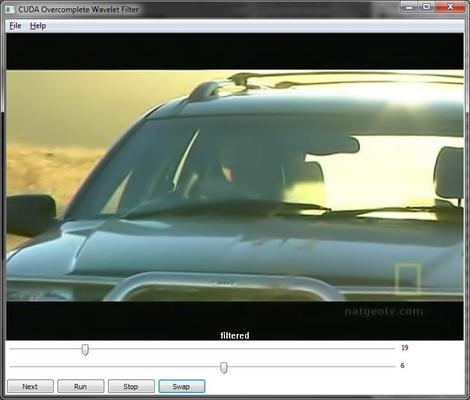

Table Of Contents
- Download
- Windows 64
cuda_ow_exe.7z - Source
cuda_ow_src.7z
- Technologies
- C++
- CUDA C
- FFMpeg
- wxWidgets
- Boost
- DLL
- Questions and Feedback
FFMpeg contains an amazing video filter called the Overcomplete Wavelet (OW) filter. The filter uses the Cohen-Daubechies-Fauraue (CDF) 9/7 wavelet to removes noise from smooth areas of frames without smoothing the detailed areas.
This shows what the filter can do with heavily compressed video. With a strong OW filter like this, it looks at first glance as if a significant amount of information has been lost, but comparing the discernible details (ignoring the noise and compression artifacts), shows that only a very small amount of information is lost.
Full resolution: Heavily compressed
Full resolution: Analog TV recording
Full resolution: Analog TV recording, Zoom
The main usage for this filter is to increase compression rates when transcoding noisy video. If the noise is not filtered out, the video encoder will attempt to preserve it, which will hurt both the quality of the encode and the compression ratio. However, the filter is extremely expensive. Running a 1920x1080 movie through the OW filter with MEncoder:
mencoder -nosound -ovc raw test.mkv -o test.avi -vf ow=6:3:3
processes the movie at around 0.25 fps on my Q6600 (Core 2 Quad Kentsfield at 2.4GHz). At that rate, a 2 hour movie takes around 10 days to process. Using CUDA, I’ve increased the processing rate to 3.8 fps on the same movie, running on my GTX 275 (GT200b, 240 cores at 633MHz), decreasing the total processing time from 10 days to 16 hours.
The CUDA OW filter project consists of 3 parts:
I implemented the CUDA OW filter as a DLL to make it easy to pull into other projects and to limit the dependencies on the CUDA runtime to a single location. The DLL is used from the GUI application (see below) and from the custom version of MEncoder.
I built the GUI application initially just to exercise the DLL but it’s now usable in its own right. It uses FFMpeg to open all videos that FFMpeg supports and OW filter parameters can be adjusted with sliders while watching the result in real time to find the best parameters for a given movie.
The most convenient way to use the GUI application is to associate it as a non-default program to open the video file formats of interest (On Windows 7, right-click the video file, Open With, Chose default program, unselect Use the selected program to open this kind of file, browse to me_gui.exe).
The GUI application also contains a CPU implementation of the filter adapted from the one in FFMpeg. The implementation in FFMpeg uses some fairly convoluted pointer arithmetic for pixel adressing while the GPU works best with cartesian adressing, so I started the project by converting the FFMpeg version to use cartesian adressing. In the process, I found a code layout that made it much easier (at least to me) to see exactly how the filter works, so I kept that version for benchmarking against the CPU even after I had the GPU kernels working.
Keyboard shortcuts:
| Space | Swap between filtered and unfiltered view |
| Pg-Dn | Next frame |
| Enter | Run |
| Esc | Stop |
The customization of MEncoder consists of a new version of vf_ow.c that calls out to the CUDA OW DLL. Compiling MEncoder with all the bells and whistles is not trivial and my version focuses on the parts that I use, and leaves out a lot. I’ve included that version of MEncoder along with the new vf_ow.c file.
To perform a 2D wavelet transform, first, the source image is split into two images. One image contains the low frequency components of the source image and one contains the high frequency components. Each of the two images are then again split into two images in the same way, resulting in a total of 4 images generated from the one source image, each of the same resulution as the source.
This process can be repeated several times, each time taking the one of the 4 previously generated images that contain the lowest frequencies and using it as a source for creating 4 more images. We refer to each set of 4 images as a level.
The number of times the process is repeated is refered to as the depth. The deeper the depth, the lower the frequencies that can be processed.
When the 2D wavelet transformation is complete, there is a total of 4 x depth images.
After the transformation, specific frequencies in the image can be processed individually by altering the data in specific images at specific depths.
After the wavelet transformed images have been processed, an image is created by doing an inverse wavelet transform. The inverse wavelet transform combines all the images generated by the wavelet transform into a single image.
This image shows the sequence of images that are created in a wavelet transform. The source image is not shown. The four images in the leftmost vertical column are the images created in level 1. The next column contains the four images for level 2 and so on, out to a depth of 5.
A “mirror” adressing mode is used for handling pixel fetches that would read outside the image. This adressing works by folding a read position that would be outside of the image back into the image.
In the following, REGULAR is the image and each letter is a pixel. The MIRROR areas are “reflections” of the regular pixels:
<MIRROR> <- REGULAR -> <MIRROR>
ihgfedcb abcdefghijklmnopqrstuvwxyz yxwvutsr
The following function shows how mirror adressing works when only a single folding may be necessary. But in a real implementation, it is possible that more than one folding is required, which must be implemented with a loop.
int mirror (int x, int w) {
if (x < 0)
return -x;
if (x > w)
return w + w - x;
return x;
}
The GPU supports a mirror adressing mode, but that mode is not exposed in the high level CUDA API. I did some experiments to find out if running a software mirror function would slow the processes down and found that there was very little impact. So I’m currently doing mirroring in software instead of using the GPU hardware.
The OW filter is implemented as 4 kernels that run sequentially:
The tall bars at the beginning and end are are the copying of data from CPU to GPU and back again. This is the Cost of Doing Business (CDB) with the GPU.
Full resolution: Kernel 10/10/09 1
Detailed timing info.
Full resolution: Kernel 10/10/09 2
Each of the 2D wavelet transform kernels reads 5 times as many pixels as are present in the image (rarely sequentially) and writes 2 times as many pixels as are present in the image. In addition, several floating point additions and multiplications are done for each read. It says something about how fast the GPU is working that the 2D wavelet transform runs in only a fraction of the time that it takes to copy the data to the graphics card over a 16 lane PCIe bus.
This is just a funky image I got while debugging.
Full resolution: Tractor
The Cohen-Daubechies-Fauraue (CDF) 9/7 wavelet used in this filter is the same filter that is used for lossy compression in JPEG2000. It would be interesting to see if compression and decompression of JPEG2000 could be accelerated using this code.
The GUI application currently does not honor PAR or DAR (Pixel Aspect Ratio and Display Aspect Ratio) values.
Video position slider.
{kind=link}
{kind=link}
{kind=link}